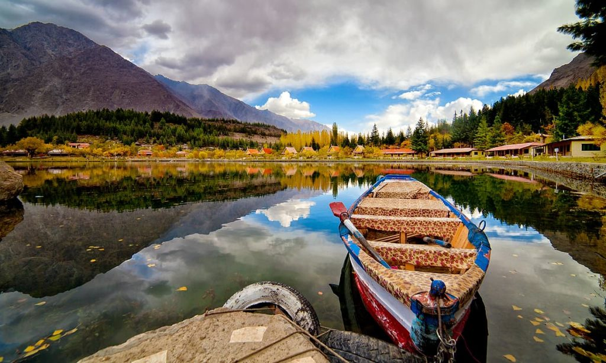
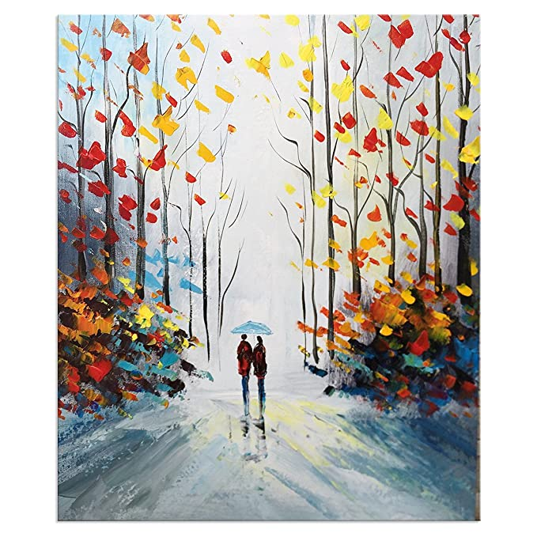
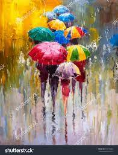

Travelling
Travelling is one of my favorite hobbies. There is something incredibly thrilling about exploring new destinations, immersing myself in different cultures, and experiencing all that the world has to offer. I love researching different travel destinations, planning itineraries, and making arrangements for flights, accommodations, and activities. Whether it's hiking in the mountains, relaxing on a beach, or exploring historical sites and museums, I find that each trip provides me with unique opportunities for learning, growth, and adventure.
One of the things I enjoy most about travelling is meeting new people from all walks of life. It's amazing how a shared love for travel can create connections and foster friendships across language and cultural barriers. Through these interactions, I have gained a greater appreciation for the diversity and richness of our world, and I have also learned a lot about myself and my own values and beliefs.

Travelling has also taught me important life skills, such as adaptability, problem-solving, and resourcefulness. When navigating unfamiliar territory, I have learned to be patient, flexible, and open-minded. I have also learned to be more environmentally conscious, respectful of local customs and traditions, and mindful of my own impact on the places I visit.
Overall, travelling has enriched my life in countless ways, and I look forward to continuing to explore the world and all of its wonders.
Reading
One of my main hobbies is reading. I enjoy exploring different genres, from classic literature to contemporary fiction, and immersing myself in new worlds and perspectives. Reading also helps me relax and de-stress after a long day.
Hiking
Another hobby of mine is hiking and spending time in nature. I find that being outdoors and surrounded by the beauty of the natural world helps me connect with myself and feel more grounded. I love exploring new trails and discovering hidden gems in my local area, as well as planning hiking trips to national parks and other scenic destinations
In addition to reading and hiking, I also enjoy practicing yoga and meditation. Yoga helps me stay physically active while also providing mental clarity and stress relief. Meditation, on the other hand, helps me cultivate a sense of inner peace and mindfulness..

Painting
Finally, I have recently taken up painting as a hobby. While I am still a beginner, I find that painting allows me to express my creativity and explore different color palettes and techniques. It is a relaxing and meditative activity that I look forward to practicing more in the future.

Here is another favourite painting of mine.

Overall, my hobbies play an important role in my life by providing me with opportunities to pursue my passions, explore new interests, and find balance and relaxation amidst the busyness of everyday life.